fd
fdShop SMS SMS Technical SMS products & services SMS in articles and webinars Testimonies
SMS and the environment
SMS news
Interesting
links
SMS: How, why and when
SMS Q&A
SMS for design and
advertising Getting started with SMS colours SMS BLOCKS Cost of ownership |
SMS for print Printers (in all categories) SMS READY - or not? |
SMS NEWS
April 2026 - SMS Skin Tones v1
Just when we were getting ready to relax we found a new problem - one that we didn't know existed until recently: The problem that many brands have found when it comes to making sure that skin tones are kept consistent - even from run to run at the same print shop.
Turns out that designers/photographers and even printers don't seem to pay enough attention to skin colours of models that are used in marketing campaigns.
In a previous life I was actually responsible for making model images look their best in a professional capacity and as a colour enthusiast I of course learned everything there was to learn about this, - including that the skintone was beautiful and the teeth were white as pearls, - since yes, the job was to get jobs for those young models by only showing digital sRGB jpgs of their books to convince modeling agencies in the fashion capitals to give them a go for a few weeks infront of end customers. This is how new models are discovered nota bene. And yes, images of even top models and actors are processed this way before they are released for publication. They don't actually look this good in real life (sorry).
So, of course I decided that it would be a cool idea to develop a range of skin tones that are safe to apply digitally, if the idea is to make the skin tone of the model look fresh and attractive - v.s. blue or green or something horrible.
So I took a deep dive into what is considered a fresh and natural skin tone and decided to start with 11 skin tones for people from 11 parts of the world. It is not an absolute catalog of all people in the world but it is at least a start that photographers, designers and prepress people can use to check if the skin tone is natural - or at least in the ballpark of natural.
Here is for instance a model who has medium dark skin, so I picked SMS Africa 1o, - which is quite close to her original skin tone (based on the picture - minus some blushing in her cheeks that I killed, when I turned the image into a b/w), the lightest tone available for African native people - according to our research.
She is nota bene wearing a dress that we coloured digitally to SMS J-11b - and a lipstick of the colour SMS J-20 (our own red colour).
Photographers and designers (that have the written permission of the photographer) that know their way around Adobe Photoshop can easily apply SMS colours to faces of models - say to apply a nice blush or unique eyeliner at their discretion, - as long as they are not advertising a proprietary line of blush or eyeliner of course. Just don't get carried away - and make sure that you use only SMS colours from the same SMS colour palette - in this case SMS Standard or SMS Standard Home & Office v7.

What I personally find super cool about these skin tones (more may be added later, - let's see) is that they are optimized to our SMS Standard Home & Office colour space, - which means that those 11 tones can actually be displayed correctly online (for monitors that only need to cover approx. 60% of the sRGB gamut/approx. 45% of the NTSC colour gamut), on Television and in CMYK printing to universal standards on both coated AND uncoated paper.
In fact the base tones fit perfectly within the colour gamut of SMS ECO, - meaning that the base tone can be printed in your local newspaper. However, since we don't want to oversell, we are officially restricting these 11 colours to the SMS Standard Home & Office colour space.
Designers simply need to mask out the skin parts of the model, find a midtone on the face and mark it and then import the SMS skin tone patch into the document, place it next to the midtone patch and then adjust the colour of the face until the LAB value of the midtone spot and the SMS skin tone patch are the same.
NOTE: The SMS skin tones are delivered in sRGB format. If you have already converted the image to the final CMYK destination format, convert the SMS skin tone patch to that same CMYK icc profile using Absolute Colorimetric Rendering Intent, no dither, safe it as TIF(F) and then import it.
If you are already an SMS user, you will know that I sincerely despise fancy colour descriptions such as fresh automn or summer yellow - or pleasant colour.
The clear architecture of the Spot Matching System is that we define our colours by fixed 3C (Cross-media Colour Consistency) LAB values and we recommend the same for brands of any size and shape.
Make up or clothing or lipstick manufacturers that would like to use our SMS colours are welcome to do so. We are happy to teach them how to match SMS colours. Being able to present your product in it's actual colour(s) in any relevant media should be an obvious advantage to any brand, in any category.
By the end of the day, we do not care HOW they match them, - just as long as they match them visually. If it looks like an SMS colour, it is an SMS colour.
The SMS P20SKINo colours are available in the Spot-Nordic online store for EUR 50. Get your skin colours today.
Best regards
Ingi
April 2026 - 2 brand new SMS products presented!
Spot-Nordic is delighted to announce that we have added 2 brand new and exciting products to our offering.
This shows the blind commitment of Spot-Nordic to provide creative customers with the best possible products preparing them for any task they may be faced with.
P53a: Design Basic bundle
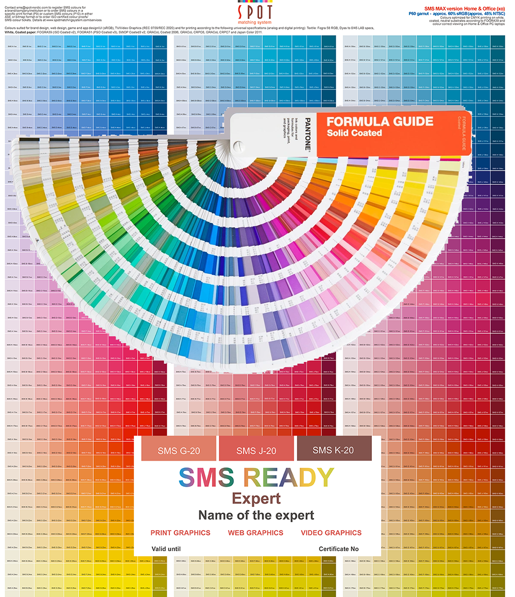
The perfect basic package for designers in all
categories that design for web, TV and for CMYK/ECG process printing
and spot colour printing.
It contains one SMS colour palette v7 of your
choice for professional design, containing 2.607 colours suited
for web design, TV graphics and Print (CMYK or ECG) design + SMS READY
Expert training + diploma – see SKU
P21 worth EUR 250 and the latest
version of the legendary Pantone Formula Guide Set for spot colour
design and spot colour printing (GP1601B) see details at https://www.pantone.com/products/graphics/formula-guide-coated-uncoated.
See further details and pricing here.
P53b: Design Executive bundle
The perfect package for designers in all
categories that design for web, TV and for CMYK/ECG process printing and
spot colour printing that covers all bases in modern design.
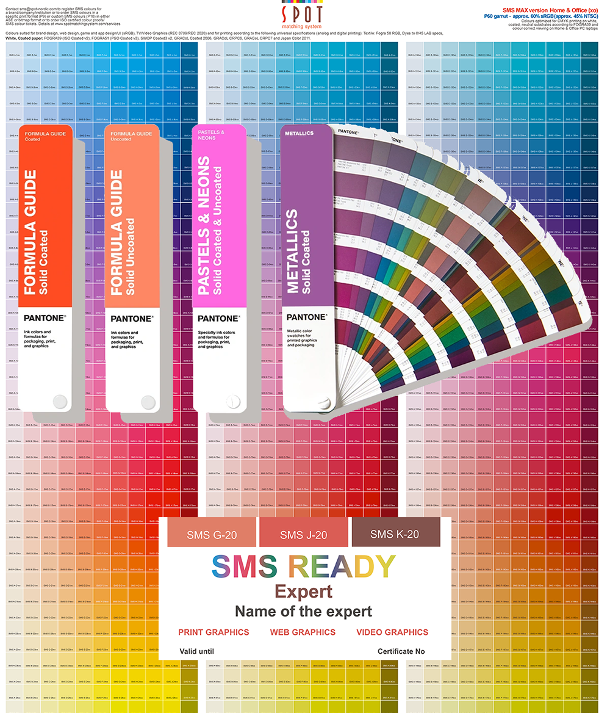
It contains all 6
SMS colour palette v7 – a total of 15.642 colours for professional
design, each SMS colour palette containing 2.607 colours suited
for web design, TV graphics and Print (CMYK or ECG) design + SMS READY
Expert training + diploma + SMS READY agency diploma (our SMS
READY Agency bundle) – worth EUR
595 and the latest version of the Pantone Solid Guide Set (Formula Guide
set, Pantone Pastels and Neons and Pantone Metallics) for spot colour
design and spot colour printing (GP1605B) see details at PANTONE®
USA | Solid Guide Set – Formula Guide Coated & Uncoated, Pastels & Neons
Guide, Metallic Guide
March 2026 - 2 brand new SMS products presented!

We are delighted to announce that we have added 2 brand new and exciting products to our offering:
P22: SMS Brand Colour Passport available to all registered SMS users - free of charge to SMS subscribers.
Check out our own SMS Brand Colour Passport here.
High quality samples of the respective logo(s) in curve format (full resolution) with detailed colour information for all relevant media (Web, TV, Print) and accurate colour samples of each SMS colour delivered in PDF, sRGB format.
SMS Brand Colour Passports are available to SMS users for EUR 195 but are free of charge to SMS subscribers.
P44: SMS READY verification for print shops in all categories - from small print shops to large ones for only EUR 280 per year per location!

This is a light version of our SMS READY print shop certification, suited for any print shop in any category of printing, big or small - even specialized packaging print shops printing on non-standard substrates, where the print shop is simply required to proof that they can print the SMS READY control strip (see image above) within a MAX dE00 of 3 or less. This is in itself a strong indication that all other SMS colours from the same respective SMS colour palette will also be within a similar dE00 as the colours of the control strip, although the estimated dE00 of each individual SMS colour printed is not known exactly (this is possible in the case of the SMS READY print shop certification).
If the print shop is able to do this - and agrees to commit to keeping the colours of the SMS READY control strip (should be printed with each job) constantly within a dE00 of 3 or less - or a lower dE00 if the print shop considers that possible, an SMS READY verification diploma and badge are issued to the print shop, valid for 12 months at the time. The print shop will then need to repeat the test print after 12 months, should they wish to renew the diploma.
Included in the price is one SMS colour palette v7 (2.607 colours) and SMS READY Expert training for one key employee of the print shop, who will be in charge of ensuring that SMS colours printed are kept within the dE00 of the print shop and that all incoming SMS colours are correct as well as to ensure that the SMS READY control strip in the appropriate format is included when possible and that it is measured by the printer before the job is printed.
Both products have been added to our webshop at https://www.spot-nordic.com/shop/product-category/sms/
Feel free to contact
support@spotmatchingsystem.com for more information or to order.
February 2026 - Lifetime access to Spot-Nordic colour services. Lifetime SMS brand license for the whole world!
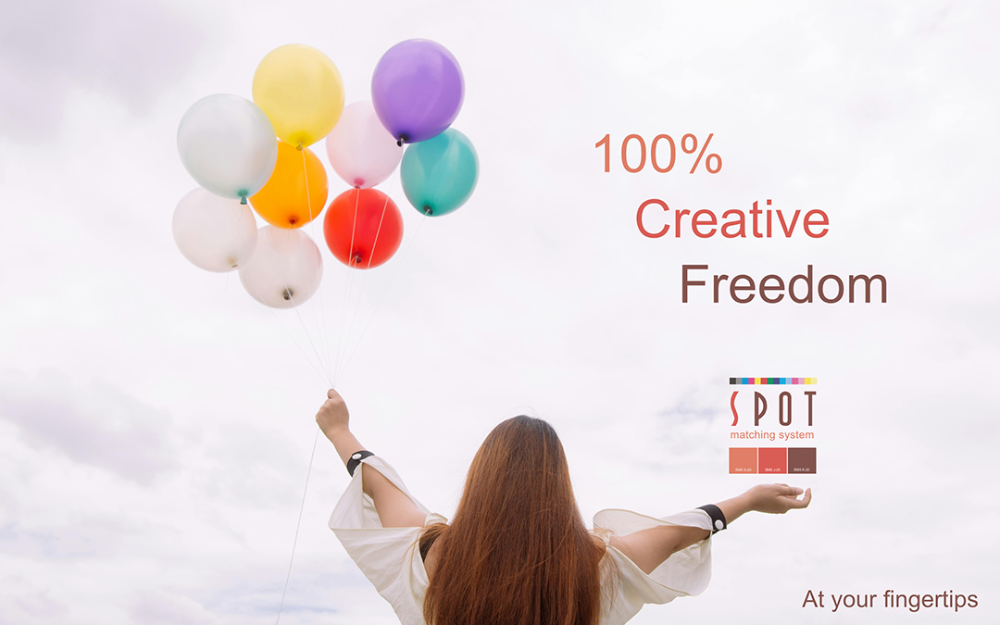
After careful consideration Spot-Nordic has decided to take the leap and to break the final chains and release the Spot Matching System completely.
No conditions to renew EVER, no more brand licenses (forcing
designers to buy another system) - and no subscription, even if you
wanted one.
Just buy the SMS colour palettes you want once and you can use them
forever, for as many customers you want.
As of February 2nd 2026, each of the P20
palettes (as of version 7) here below, includes lifetime access to
technical support and services by Spot-Nordic for services and proofs
where colours from the respective colour palette are used.
Designers and design agencies are also welcome to register (free
of charge) individual brand logos and brand colours with
Spot-Nordic, where colours from the respective SMS colour palette are
used. To register a brand, a copy of the brand colours and key artwork
(logo etc.) should be sent to
support@spotmatchingsystem.com
with the SMS colour patches in bitmap sRGB format and preferably the SMS
colours in ASE palette format.
January 2026 - All 6 SMS v7 colour books available for TECHKON SpectroDens Advanced & Premium
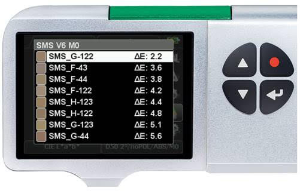
We have released all 6 SMS colour libraries v7 for the SMS READY TECHKON
SpectroDens, Advanced and Premium version, enabling instant checking of
selected SMS colours that can be uploaded to the instrument via TECHKON
Spectro Connect software (included with the instrument).
All 6 SMS colour books v7 are included in purchases of those instruments
from Spot-Nordic (www.spot-nordic.com) and can be purchased separately
in our online store (
https://www.spot-nordic.com/shop) and via SMS dealers.
The price per TECHKON colour book is EUR 60 and all 6 colour books can be purchased for a bundle price of EUR 225.
The SMS TECHKON colour books are delivered for M0, M1, M2 and M3 condition.
We are including each respective TECHKON SMS colour book with purchase of the respective SMS colour palette throughout January. Simply order your P20, P20o, P20e, P20x, P20xo or P20xs colour palette - or the SMS READY Agency bundle (P43) and get the respective TECHKON colour book for free as a bonus.
January 2026 - uniform SMS white background colours available for a completely uniform visual experience
We have released SMS ECO and SMS Standard white backgrounds for customers that would like to maximize the visual consistency between their printed material and their website and TV graphics.
The standard white for websites is very bright as we all know, - considerably brighter than the white point of "normal" paper.
If you are an SMS user and if you want to use your paper white point for your official website - or say, something very close to the white point of the paper that you are using for your printed material, make sure that all bitmap images you use on your website are in PNG format, - preferably with the sRGB icc profile embedded to each graphic. That way the white point of your graphics will be transparent by default and your bitmaps will not look like stamps on your website, - see example at www.spot-nordic.com, where we use a bitmap that is supposed to be severely uncoated on the left and coated on the right.
The SMS Standard White has the white point of FOGRA39/FOGRA47 - according to ISO 12647-2-2004/AMD 2007 - also very close to the white point of GRACoL CRPC6 and CRPC3 or the older GRACoL Coated 2006 and the ECO white is the target white of newspapers according to ISO 12647-3 / WAN-IFRA.
If you are using papers that have a different white point than the ones here below, you can simply measure it with a spectrophotometer and create your own white point using the LAB values you measured for optimum visual consistency between your website and your printed material.
Feel free to download the SMS whites here below. They are free of charge in sRGB, PNG format. If you need to use them for CMYK printing, use them as any other SMS colour and convert them to the destination CMYK - see instruction videos here.

December 27th 2025 - ASE (Adobe Swatch Exchange) swatches included with all SMS colour palettes!
We are now including an ASE colour palette, suited for direct import into both Adobe and Affinity apps with all purchases of individual P20 SMS colour palettes, subscription packages and certification packages.
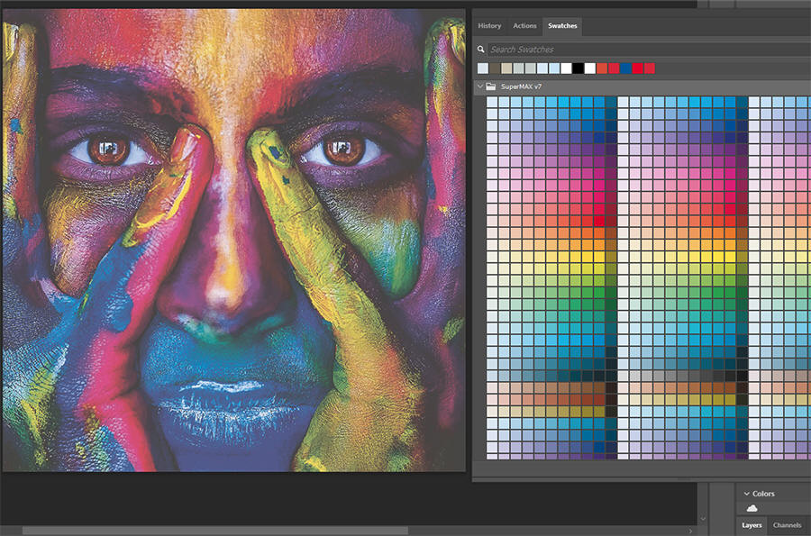
SMS ECO v7 (2.607 colours)
SMS Standard v7 (2.607 colours)
SMS Standard Home & Office v7 (2.607 colours)
SMS MAX v7 (2.607 colours)
SMS MAX Home & Office v7 (2.607 colours)
SMS SuperMAX v7 (2.607 colours)
The price remains the same - EUR 120 per colour palette / EUR 450 for the SMS READY Agency bundle - see details at www.spotmatchingsystem.com/services.
We still strongly recommend that for any branded design for registered SMS brands where it is essential to keep track of which SMS colours are being used, that designers do NOT pick colours from the huge ASE palettes, but instead pick out the colours they want to use from the PDF bitmap colours, copy the colours they want to use into a seperate bitmap file, present the colours to the end customer via email or in person and on approval, create a custom ASE palette for the customer - or simply use the bitmap method to keep track of the chosen SMS colours in all variations - see training videos at www.spotmatchingsystem.com/info.
The SMS ASE palettes are safe to use for non-branded / one-off jobs for web, TV or print where you don't have to worry about which SMS colours are being used.
November 23rd 2025 - First open SMS Colour webinar/Zoom meeting
We are hosting the first open SMS Colour webinar/Zoom meeting on Sunday November 2rd from 12:00 - 13:00 GMT.
In this first meeting Ingi Karlsson and Kevin Pinto will be covering the
SMS workflow,
Achieving true Cross-media Colour Consistency is now more important than
ever.
If you work with colour across print, digital, textile, packaging, or
broadcast media, this session will give you a clear, practical
understanding of how to use the colour palettes of the Spot Matching
System (SMS) at a professional level.
Sunday, 23 November
⏰ 12:00 – 13:00 GMT
Live Zoom Session + Open Q&A
What you will learn:
• How the SMS workflow and SMS READY control strips function
• How to interpret LAB values and dE00 tolerances
• How to choose the correct paper and ICC profiles
• Why universal print standards/specifications matter
Who should attend?
Brand Owners • Creative Agencies • Creative Directors • Designers •
Pre-press Teams • Printing Supervisors • Manufacturers
This session will be hosted by:
Kevin Pinto – SMS READY
Expert #6
Ingi Karlsson – Creator of the Spot Matching System
Bring your questions—we will address them live.
You may also send them in advance to: support@spotmatchingsystem.com
Register here:
https://us06web.zoom.us/meeting/register/XCK_wAimRcKxpH-bXdWM5w
Or email: kdpinto9@icloud.com
Maximum number of guests is 300.
November 2025 - Affinity 3 tested and passed with flying colours for SMS design and conversion of SMS colours for printing
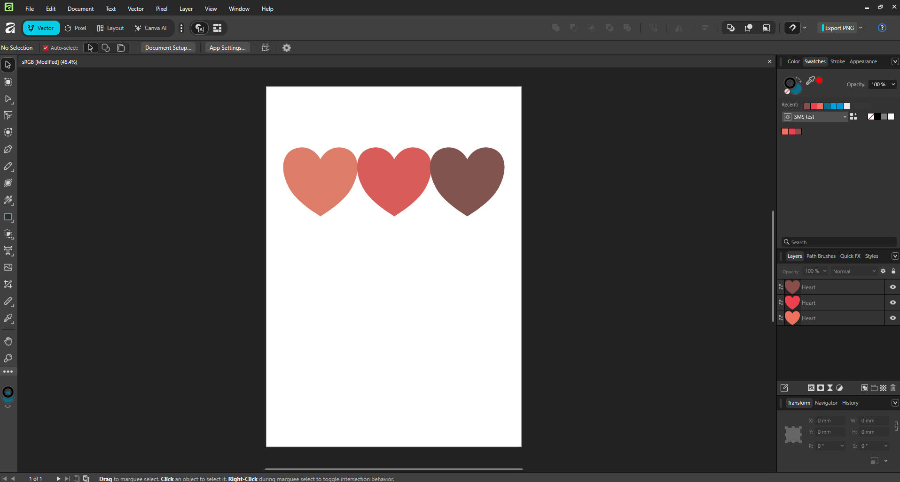
We have tested the new FREE Affinity 3 app from Canva and found it perfect for SMS design and PDF export for print.
Find detailed instruction videos on how to use SMS colours in design for web and print at www.spotmatchingsystem.com/info.
To download your Affinity 3 visit the website https://www.affinity.studio/get-affinity
October 2025 - SMS version 7 - free brand licenses added for SMS users:

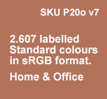

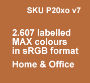


As of 24th of October 2025, we are including 10 (free) lifetime brand licenses for 10 brands, companies or institutions with each purchase of a P20 colour palette version 7 and 20 lifetime brand licenses with each purchase of our SMS READY Agency certification package.
Until now the brand license fee per brand/company/institution has been EUR 60 per year after the first 12 months.
A brand license includes that we register the brand/company/institution as an SMS brand, save a copy of the SMS colours and key artwork for the brand/company/institution and the registrant and his service providers (print shops and manufacturers) can order colour services for the respective brand from Spot-Nordic according to our pricelist - see www.spotmatchingsystem.com/services.
October 2025 - SMS version 7 - major upgrade:

We are extremely happy to announce the official release of our 7th version of the Spot Matching System.
This should be considered a major upgrade, since we are adding 869 new colours to this version, making the number of colours per SMS colour palette 2.607 - and we are adding another SMS colour palette, - making that the 3rd stand-alone colour palette this year, making the number of available SMS colours for professional design in total 15.642!
The new colours are mostly tweaked variations of older SMS colours - with a dash of cyan or magenta or yellow or black, - while we decided that we have had enough of olive colours and thus we added some fresh brown colours that might be suited for anything from skin tones to coffee colour - all in all 66 brown shades from light to dark.
Those 66 colours are inspired by the colours here above and can be
reproduced quite closely in our MAX and SuperMAX versions (for
printing on coated paper).
SMS SuperMAX
We are presenting the first version of colours suited for extended colour gamut printing on coated paper.
The SuperMAX colours are considerably more vivid that the old SMS MAX colours and are optimized for printing to FOGRA59/eciCMYKv2, GRACoL CRPC7 and XCMYK specifications. The SuperMAX colours are primarily intended for packaging design and printing.
Completely neutral black and grays
We took the liberty of tweaking the SMS-42 line in all systems to make the black and grays completely neutral, - even in the ECO version.
Version 7 of the Spot Matching System is available and is delivered in PDF, sRGB format. Version 6 will remain available throughout the year as well.
Please visit our service and product section to see our complete range of SMS products and services and to place your order.
March 2025 - SMS Home & Office (Standard and MAX) libraries now available
We have used this year to look into how people view colours - brand colours to be exact.
What we found out is that a large portion of people around the world are viewing colours on PC laptops that have displays that only cover approx. 45% of the NTSC colour gamut, which is approx. 60% of the sRGB gamut - not 100% - which is a requirement if you are working with the original SMS colours.
We refer to this gamut simply as the P60 gamut - named after the product number of our first laptop that has this gamut and on which the Home & Office colour palettes were built.
These laptops or notebooks are affordable and perfectly suitable for office, school and home, for building and browsing Power Point presentations and Excel charts, but not built for high end graphic work or evaluation of brand colours in general.
That again means that these people cannot see all the SMS colours that people that have better displays - 100% sRGB capable displays or Apple displays for instance. (45% of the NTSC colour gamut)
So if you happen to be marketing a certain colour, it is obviously not helpful if large portion of your prospective customers are seeing a completely different colour on their laptop displays.
This is awkward if you are marketing a brand - any brand, - but
imagine for instance if you were a manufacturer of caps that you were
primarily selling online in your webshop and you picked out
a red colour for your line of caps, that do not look red on the displays
of half of your customers - but orange.
Would that be acceptable - for you - or for your customers?
That is why we have now launced a brand new line of SMS colours - quite similar to the standard ones - but they could be referred to as "Web Safe" colours - i.e. they typically will look quite correct on even modest office PC laptop displays.
We have named this line, which is available in the Standard and MAX range Home & Office.
For identification, the Standard v6 Home & Office colours are labelled with a small o (for office) and the MAX v6 Home & Office colours are labelled with xo at the end - x for MAX of course and the o for office.
Fortunately our original SMS ECO colours fit nicely within the small gamut of office PC laptops
Here is a screenshot from a random website of one of our Icelandic Banks - the Bank of Iceland (Islandsbanki) that we grabbed, just to demonstrate the advantage of our new Home & Office colour palettes.
The upper image is what the image is the original image, converted to sRGB by the designer.
We have inserted 2 colours from our new SMS MAX v6 Home & Office colour palette as optional red SMS colours that the designer could have used.
If your display is capable of displaying 100% sRGB, you will see that the red colours that the designer went with are quite saturated, compared to the SMS colours.
To be clear, the designers did absolutely NOTHING wrong here. They made sure that all their brand colours were within the sRGB gamut, which is the standard colour gamut used for web design globally. That is why SMS colours are adjusted to sRGB and have been from the start.
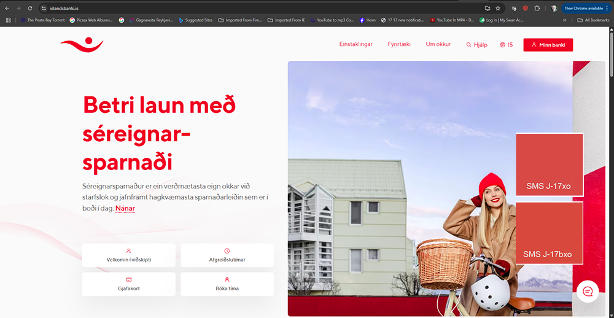
The following image has been processed by us to look as people who are viewing it on standard office (45% NTSC/60% sRGB) PC laptops will see it.
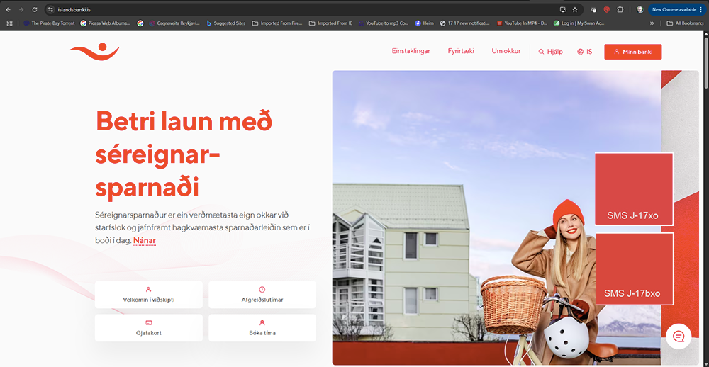
If your display is capable of displaying 100% sRGB or more, you will see that the reds in the image - the logo, the cap on the girl and the wall on the right are all of a sudden ORANGE, instead of red.
If you are looking at the images on a typical office PC laptop display, both images will be the same - and the reds more like dark orange, - not red exactly.
What happens here is that when you come across images or graphics online that are outside the gamut of your display, all colours are automatically converted to the closest colour within your display gamut.
So in this case for instance - in our opinion it would make good sense for this bank to switch to either the Home & Office SMS J-17xo for a nice cool red colour or the SMS J-17bxo for a slightly warmer - yet RED colour.
I know however for a fact that the colour of Islandsbanki is RED.
Since regretfully this happens to be the corporate colour of the Bank of Iceland, many people surely believe their colour is dark orange since that is what it looks like on their PC display.
On top of offering the Home & Office colour palettes, we have gone above and beyond and you can now buy a reasonably priced Spot-Nordic P60 laptop from Spot-Nordic, - the PC that we used to create the Home & Office colour palettes in fact.
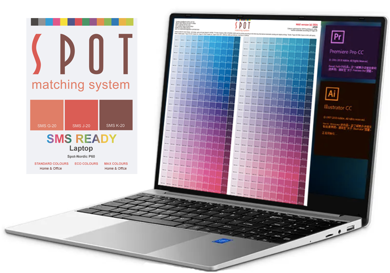
We have added it to our QC web page, along with a few useful products for colour concious professionals - see here.
December 2024 - SMS MAX v6 now available in both PDF and ASE format + library available for TECHKON and Colormeter Exact
We released our SMS Standard v6 library in May this year. The new version was made available in both PDF and ASE format (ASE for direct import of the colours to the swatches library in Adobe and Affinity apps).
In the meantime, the SMS MAX v6 and SMS ECO v6 were simply released in PDF format, since we assumed that most designers were anyway using the PDF bitmaps to grab their needed SMS colours with the Eyedropper tool.
However, more and more SMS users do not use the Eyedropper tool - except to create a custom SMS swatch in their Adobe or Affinity app and from then on they create their designs using the swatch only and even leaving out the bitmap swatches, - even if we highly suggest they be included within the layout to enable printshops to see what SMS colours are being used in each respective job.
We have now added an ASE version of the MAX v6 library too
The SMS MAX colours (1.738 colours) are suited for web design, for video graphics and for CMYK printing on coated paper, - so well suited for packaging where there is no need to print the exact SMS colours on uncoated paper (letterheads, envelopes etc.).
At the same time, we are making the built-in library available for TECHKON SpectroDens instruments (Advanced and Premium) and the ColorMeter Exact instrument - see details on the ColorMeter Exact here.
The SMS Standard v6 or the SMS MAX v6 colour palette (P20 or P20x), - EUR 90 each, as well as the SMS Standard v6 and SMS MAX v6 built-in libraries are included for free with purchases of both the ColorMeter Exact and the TECHKON SpectroDens (Advanced and Premium) from Spot-Nordic.
Note that to buy a TECHKON SpectroDens instrument from Spot-Nordic, you will need to travel to Iceland to pick up the instrument.
Please contact support@spotmatchingsystem.com for a quote.
The price per built-in library is otherwise EUR 90 - for both TECHKON SpectroDens and ColorMeter Exact.
We are offering the following special Xmas deals until the end of the year:
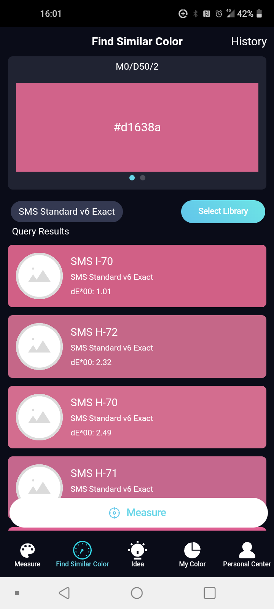
SMS P20 v6 + SMS P20x v6: List price: EUR 180. Special price: EUR 139.
ColorMeter Exact + SMS P20 v6 + SMS P20x v6: List price EUR 689. Special price: EUR 599 (transport included worldwide).
Contact support@spotmatchingsystem.com to order.
If this is a Christmas gift, please let us know the email address, full name, nickname and full address of the recipient of the gift and we will email the PDF + ASE files to the recipient on December 23rd - or 24th (please inform us - we are on GMT time in Iceland).
If you have a Christmas card ready for the recipient, we will be happy to email it along with the files.
Please note that you are not able to gift SMS colour palettes (P20, P20x, P20e), unless we have the full name and address of the recipient i.e. the intended user.
This will enable them to order services from Spot-Nordic for a period of 12 months as of purchase - see more details here.
November 2024 - French artist Zeppiro decides to use a custom SMS Standard colour - SMS ZEPPIRO-1 as his official wordmark colour

The French artist Zeppiro ordered a custom SMS Standard colour from Spot-Nordic based on a colour that he had already found and liked. His agent contacted us and after some discussions, we found a colour that fulfilled the needs of the artist - which were that the colour had to be perfectly colour consistent and correct online, on Television and in CMYK printing to the primary Fogra standards Fogra 51, Fogra 52, Fogra 47 and Fogra 39.
Spot-Nordic is proud to be working with this very demanding artist.
Demanding customers are our bread and butter and the type of customers we want to work with - because demanding customers give us the opportunity to flex our muscles and learn something new in the process.
The SMS ZEPPIRO-1 colour is a natural blue colour (see here above) and of course completely unique, - since no one else uses this colour officially.
Anyone tasked with printing the SMS ZEPPIRO-1 colour - or any SMS colour for that matter, is welcome to contact support@spotmatchingsystem.com if there are any questions on how to ensure that the colour is correctly reproduced.
Printshops around the world in any sector - analog or digital, capable of printing CMYK colours with precision, please contact us since we are happy to promote your services as SMS READY or to help you get to that level of precision.
Brands that would like to get their own completely unique SMS colour(s), please contact support@spotmatchingsystem.com. We are happy to assist and give advice.
Zeppiro had the following to say about our services:
No more surprises when receiving printed
products!
It’s a smart
investment that saves both time and money,
delivering outstanding results".
July 28th 2024 - SMS testforms have been replaced by an SMS colourbar

As a part of our effort to streamline the process of using SMS colours for design to print, Printshops and others that would like to find out if they are capable of reproducing SMS colours correctly, no longer need to print an SMS testform and a dedicated test run to check if they are SMS READY.
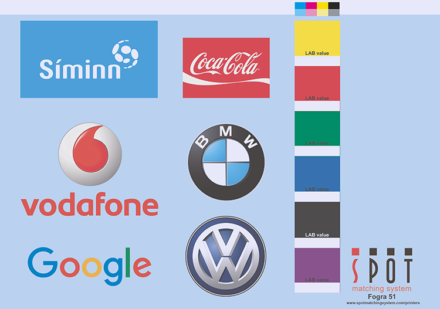
The good old SMS testform, size 22.5 x 32 cm (can still be provided if preferred)
We have replaced the SMS testform with 7 colour patches that can be placed either within or right above/below the normal colourbar.
There are 3 versions that we have made available: SMS Standard, SMS ECO and SMS MAX and printshops, paint manufacturers and dye manufacturers can decide by themselves whether they want an SMS READY certificate for one, two or all three systems.
As you can see the SMS C-2be light grayblue colour is common between all 3 standards. This again means that Printshops can place these patches on the border of the sheet for a quick visual and optionally an instrumental (spectral) quality check on their print jobs.
Printshops that wish to dig deeper and to maintain an even higher standard of quality can print the SMS ECO patches with all jobs - for any paper, and the LAB values of all the colours should always remain the same, if everything is ok.
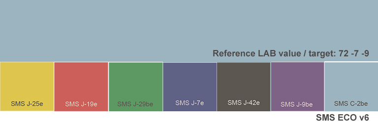
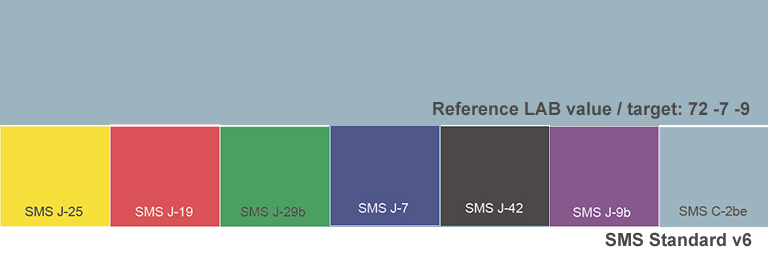
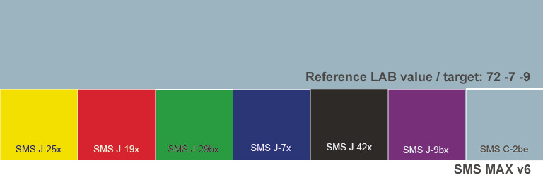
The standard measureable area of the patches (for printing on paper) is approx. 0.7 x 1 cm.
We have also made extra large patches available for textile and manual formulation of SMS colours.
The patches are in sRGB format and the SMS READY Expert of each customer can convert the colours to the CMYK colourspace of choice.
This again means that SMS users can use the patches here above to fine tune the colours of their display, once they have printed their SMS colour patches. We recommend printing of the large SMS patches in this case (each patch is approx. 5 x 7 cm).
More information about our SMS READY Expert programme at www.spotmatchingsystem.com/services.
More details about the SMS READY certifications at www.spotmatchingsystem.com/technical/smsready
The test patches can be downloaded at www.spotmatchingsystem.com/technical/smsready/smstest.
July 20th 2024 - Mr. Daniel Boaglio is SMS READY Expert #1
We are delighted to announce that Mr. Daniel Boaglio has received the very first SMS READY Expert certificate in the field of Print Graphics.
Mr. Boaglio is an Argentinian Print Consultant with decades of experience in advising and assisting print companies, especially in the Flexo and Gravure sector on how to manage their colour and print to standards.
He is the author of the book Mirada-Diferente, covering all things Flexo.
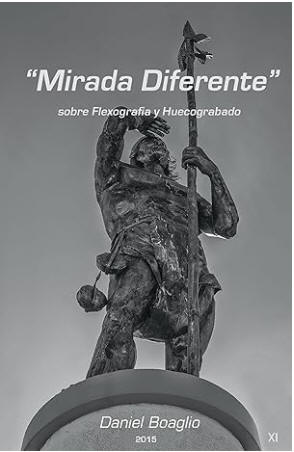
The book is available free of charge in Spanish in Kindle format on Amazon at https://www.amazon.com/Mirada-Diferente-Flexografia-Huecograbado-Spanish-ebook/dp/B0CW1F1CDM
The SMS READY Expert certificate is intended for individuals who would like to assist their customers in ensuring correct reproduction of SMS colours in their respective field, including being "super users" on behalf of subscribed SMS users - Brand Owners, Design Agencies and Print shops.
SMS READY Experts need to be knowledgeable in Adobe Photoshop and Adobe Illustrator and/or Indesign and have access to this software.
Available fields for the SMS READY Expert certificate are Print Graphics, Web Graphics and Video Graphics.
See more information about our SMS READY Expert programme at www.spotmatchingsystem.com/services.
June 2024 - SMS P20e - ECO v6 is here
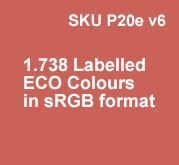
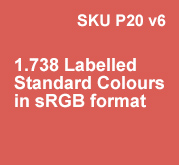
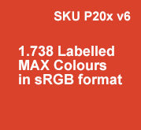
To complete the transition from version 5 to version 6, we have now released version 6 of the SMS ECO colour palette, optimized for newspaper printing - WAN-IFRA, latest version (ISO 12647-3).
The WAN-IFRA icc profile can be downloaded for free from the official
WAN-IFRA website - here
https://wan-ifra.org/wpf/icc/.
The ECO colour palette, like our Standard and MAX palettes, consists of 1.738 colours ranging from Cyan to Magenta to Yellow and Black and are a perfect choice for newspapers but as well for ECO concious customers that prefer subtle, natural colours in their trademarks and the luxury of being able to apply their colours to - well just about any substrate imagineable.
As with our Standard and MAX colours, users can create custom gradients using any or all of their SMS colours within the respective SMS colour palette that can safely be converted between all the supported colour spaces, meaning in other words that users have, not only 1.738 colours, but thousands of possible colours shades that the user can pick from for his or her layout, while remaining in gamut.
Like with the Standard v6 and MAX v6, we now add 158 new colours (removing instead the black shades in the K section).
The ECO colours have also been tweaked to keep their respective LAB value, when converting from sRGB to other colour spaces.
The price of the new ECO version is EUR 90. Included is service and support for 12 months for one brand if needed.
Instructions on how to use SMS colours in design at https://www.spot-nordic.com/sms/gettingstarted/SMS_Do_It_Yourself_05.2024.pdf
To order visit you can order here - www.spotmatchingsystem.com/services or by contacting support@spotmatchingsystem.com.
June 2024 - SMS P20x - MAX v6 is here
We have just released version 6 of the P20x MAX colour palette.
Same as the Standard v6, the colours have been tweaked to bring them closer visually, from one colour space/media to the next. There are 158 new colours that have been added to the palette and the MAX palette also supports 2 new print standards- Japan Color 2011 and GRACoL2006, just like the Standard v6.
As before, - and as the image here above indicates, the MAX colours are considerably more vivid than the Standard colours - but the downside is that they cannot be printed on uncoated paper.
They are still perfect for packaging design as well as of course web/app design and TV graphics.
June 2024 - Drupa news
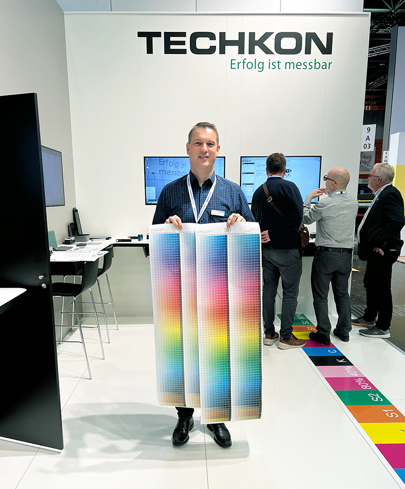
We are extremely grateful to TECHKON for exhibiting the Spot Matching System v6 in print on both coated and uncoated paper (Fogra 39 and Fogra 47) at their booth in Hall 9/A03 at Drupa. This is to our knowledge the first Icelandic product that is exhibited at Drupa.
Here is Mr. Patrick Heinl of TECHKON holding both versions up without any noticeable difference in colour - just the way we like it.
Our co-operation with TECHKON began 20 years ago, in 2004, when the creator of the Spot Matching System, Mr. Ingi Karlsson was beginning his work on a new colour system that is known today as the Spot Matching System.
Mr. Albin Baranauskas, Managing Director of TECHKON was extremely helpful to the young, unknown but ambitious guy from Iceland who seemed to have some crazy ideas about colours and lent him a spectral instrument called SP-820 to try out, which at that time was the flagship of TECHKON handheld devices - something he had never tried before. This happened to be around the same time that CIELAB was being added to the ISO 12647-2-2004 standard as a reference, to replace density as the reference to be checked in offset printing for each process colour and of course the young Ingi decided right away to make CIELAB the base for his new system.
By coincidence, 2004 was also the year that the groundbreaking TECHKON SpectroDens instrument was presented for the very first time and Ingi got the Premium version of the instrument with all the whistles and bells.
Today, the SpectroDens handheld Spectro Densitometer is an industry standard instrument in pressrooms around the world. It also happens to be the only spectro that is SMS READY (see www.spotmatchingsystem.com/technical/smsready) and at Drupa the new Standard version 6 of the Spot Matching System is included in TECHKON Colorbook format with SpectroDens instruments sold during Drupa.
Mr. Albin Baranauskas was of course at the TECHKON stand at Drupa this year, as always.
June 2024 - Updated conditions for SMS users
We have gotten several requests from designers and brand owners who are concerned that the Spot Matching System (SMS) is yet another subscription program, forcing them to pay a subscription fee each month or each year for eternity.
After reviewing this, our terms until now have in fact indicated this, while this was never the intent.
So the terms have been updated and can be read here below. Basically when on purchase of a P20 colour palette, a 12 month access to services by Spot-Nordic is included in the price.
After that, customers who require colour services and support by Spot-Nordic can extend the service by 12 months for EUR 60.
Customers who require no services or upgrades from Spot-Nordic can skip this and continue to use their SMS colour palette as they please and at any time they can spring for an extension of their brand license, should they consider that feasible.
NOTE:
Each of the P20 palettes
here below, includes a 12 month brand license, that includes access to technical support and services by
Spot-Nordic for one brand.
If the buyer wants to take advantage of Spot-Nordic colour services, a copy of the brand artwork should be sent to
support@spotmatchingsystem.com with the
SMS colour patches included - see
here.
This will enable the buyer to order certified SMS colour tickets
(printed proofs) for the brand and to confirm the accuracy of the SMS colours of the
brand at any time during the license period, if needed, while serving as
a backup to ensure that SMS brand colours don't get lost.
Additionally
Spot-Nordic may help promote the brand and/or the designer during the
service period (subject to approval of the buyer.
Furthermore, registered brands can request a free copy of the HEX values
of their SMS brand colours in Excel format for creating in-house
documents - Word, Excel or Powerpoint presentations.
Updates and upgrades to the colour palette as well as special offers and
announcements of SMS READY products and companies are available to
registered users/brands via our mailing list during the service period.
After the first 12 months, each brand license can be renewed for another
12 months for EUR 60 - contact
support@spotmatchingsystem.com before the first 12
months are up to renew.
Additional brand licenses for other brands using the
same SMS colour palette can furthermore
be purchased for EUR 60 each pr. year (suited for agencies and freelance
designers).
Renewal of a service license is never a condition.
If no services are required or if the P20 palette is used for
non-commercial or random use (layout work for
3rd party etc.), a renewal of the license in not
required.
After the first 12 months (included when the system is purchased), if
the brand license is not renewed, Spot-Nordic will delete all artwork of
the brand.
If a brand license is renewed after more than 12 months, a fresh copy of
the artwork of the brand needs to be sent to
support@spotmatchingsystem.com for continued
services.
May 2024 - Drupa, - world premiere of the SMS Standard colour palette v6!
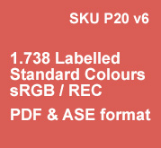
The new version of the Spot Matching System, Standard edition v6, will be presented for the first time in print on both coated and uncoated paper at Drupa 2024.
Certified proofs, provided by www.proof.de will be on display at the TECHKON stand - Hall 9 / A03, at Drupa for visitors to see our natural colours with their own eyes, - many for the first time. This new version contains 158 new colours.
TECHKON will be presenting their instruments, including the award winning Spectro-Densitometer, TECHKON SpectroDens, which happens to be the only spectral instrument in the world that is SMS READY, - i.e. considered accurate enough when printing or identifying SMS colours.
The TECHKON SpectroDens instrument, which supports all the M conditions, - M0, M1, M2 and M3, will during the Drupa show include the SMS Standard v6 colour library, enabling instant measurement of SMS colours, whether in production at the press or for brand owners to locate the closest SMS colour or to keep track of their own SMS colours from various manufacturers and printers.
The price of the SMS P20 v6 system, containing the brand new 1.738 colours of the Spot Matching System, delivered in sRGB PDF and ASE format remains EUR 90. Contact support@spotmatchingsystem.com to pre-order your copy, which will be available as of May 28th.
Further information about the Spot Matching System at www.spotmatchingsystem.com.
May 2024
The SMS Standard colour palette v6 now available for the ColorMeter
Exact pocket spectro
The new version of the Spot Matching System, Standard version 6 is now available to users of the ColorMeter Exact instrument to instantly measure and check your SMS Standard v6 colours.
Here is a screenshot from the ColorMeter Exact app set up on an Android mobile phone.
A copy of the actual SMS Standard v6 system is also included in the purchase of this instrument in ASE and PDF format.
The price of the instrument, which easily fits in your pocket, from Spot-Nordic remains the same - EUR 599 including shipment worldwide.
See further details at https://www.spot-nordic.com/qc.
April 2024
SMS Standard colour palette upgrade to version 6!
We are very excited to announce a major upgrade to the original Standard colour palette of the Spot Matching System.
After following and participating to an extent in discussions of experts
in colour and colour management about the direction of colour and colour
management with regards to ISO standards - primarily ISO 12647, we have
accepted the fact that most of our users prefer to use the old Fogra 39
icc colour profile when preparing jobs for printing on coated paper,
with the complementary Fogra 47L icc profile for printing on uncoated
paper, following the instructions of their print shops who remain to a
large extent loyal to the old standard - ISO 12647-2-2004 and have
refused to make the switch to the newer ISO 12647-2-2013, - with of
course a few exceptions, who offer both options - the old standard and
the new one.
Experts in the field of colour management are slowly but surely
accepting the fact that Fogra 51 and Fogra 52 has not been the success
we all hoped it would be, when the the new ISO 12647-2-2013 standard was
presented - in 2013/2014.
The world is switching to LED lighting, which contains little or no UV and printers are still measuring colours using the M0 condition, rather than the new M1 condition, even when they print on paper that contains a lot of optical brighteners - which actually means that when you visually evaluate the print outside in daylight, the colours will appear bluer/colder, than when you evaluate them indoors - due to the fact that normal daylight does contain a portion of UV, which affects paper that contains optical brighteners (OBA) this way.
The new version of the Spot Matching System, - the Standard (original) version for starters, which will be available before Drupa 2024 - and which will be included free of charge with purchases of new Techkon SpectroDens instruments during the Drupa show - i.e. the TECHKON Color book containing the LAB values of the new SMS Standard colours, has been revised to bring the LAB value of each SMS colour considerably closer from one media to the next, - for instance when measuring SMS colours printed in CMYK on coated paper, according to Fogra 39 and the same SMS colours printed on uncoated paper according to Fogra 47L, with a dE00 of perhaps 0.2 at the most, - compared to a dE00 of up to 1 in the older versions from media to media.
As in the older version, the SMS colours are delivered to users in sRGB format, ready for conversion by the user to CMYK - optimized for absolute conversion to Fogra 39 and Fogra 47L and very well suited for conversion to Fogra 51 and Fogra 52, G7 - Gracol Coated 2006, CRPC3 and CRPC6 and Japan Color 2011 (Coated paper). A REC 709 version is also available for Television graphics.
When we say "very well suited", what we mean is that if the colour is
printed according to the respective standard, it should be impossible
for any human being to see a difference between the same SMS colour
printed according to Japan Color 2011 and Fogra 47L for instance.
The only visual difference, if any, in the final printed product will be
due to incorrect adjustment of the printing press, incorrect ink or
incorrect ink density, - not gamut
problems when preparing the PDF for print to the requested CMYK
standard. This was of course also true for the older versions of the
system but the likeness has now improved, as close to perfection as we
can, - which is of course always the goal.
True to our SMS colours, we will be switching to a new version of our own SMS logo, where we use the same colours, tweaked according to the new v6 standard, - and as can be seen, we have taken this opportunity to lighten up the K line - the "black" shades, who were not really a success among our users, while the new shades are simply the same primary full colour with a dash of black to create a dark shade of that colour.
Curious viewers can compare the colours of the old and the new logo in Photoshop. As you will see the new colours are slightly "cleaner" - less blue if you will, and of course the new "black" contains more of the full colour than the old version.
In other words, this means that users of the new version will in fact get a total of 158 cool new colours to work with, while at the same time they will have to say goodbye to the black shades from the previous version.
Here is the preview of the new logo with the new colours.
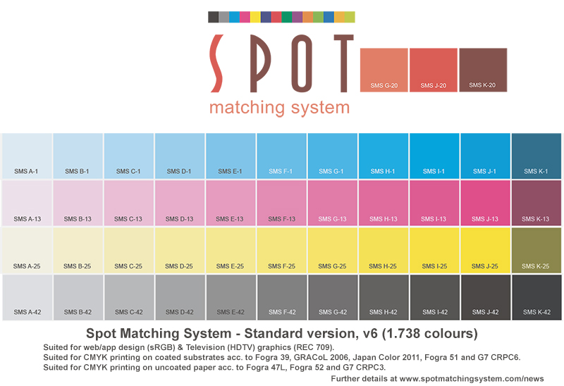
SMS users may recall that we offered a free ASE version of version 4 (869 colours) but version 5 was only available in PDF format.
We are going overboard and beyond with this new version, which will be offered in it's natural sRGB PDF format of course with a free ASE version for Adobe and Affinity apps.
The cost of the new version however remains the same: EUR 90.
Brand owners/Brands - or their advertising agency can
optionally register their SMS colours to have access to Spot-Nordic
technical support when
needed.
Brand owners (or their advertising agency on behalf of said brand
owners) that register their official SMS colours with Spot-Nordic need
to provide a copy of their artwork to Spot-Nordic in the correct SMS
colours - in sRGB format (72dpi, PDF), including the respective SMS
colour patches.
Similar to this - artwork + SMS patches.

Registration of official SMS colours costs EUR 60 pr. year pr. brand
Registered Brand owners/brands can also request a free copy of the Excel version of their chosen SMS colours, enabling them to easily use their SMS colours for colour correct Microsoft presentations in Excel or Powerpoint format for instance.
SMS READY printers and manufacturers can order the respective brand colours of registered SMS users directly from Spot-Nordic or contact Spot-Nordic to confirm that the colours received are in fact correct, before going into production.
Bigger Brand owners can also opt to subscribe for an all included full service SMS subscription - see www.spotmatchingsystem.com/services.
Please contact support@spotmatchingsystem.com to pre-order your copy of the new Standard version of the Spot Matching System - v6.
Registered owners of version 5 are entitled a free copy of the new version when it becomes available, scheduled for Drupa week - May 28th.
December 2023
The SMS logo updated to contain the colours of the SMS Colour Wheel!
Following the presentation of the SMS Colour Wheel, the SMS official logo has been updated. It contains all of the colours of the SMS Colour Wheel plus the black SMS K-19 and a neutral gray.
The colours of the logo however remain the same, belonging to the Standard version of the Spot Matching System, which means they can be displayed correctly online and on TV and printed in standard CMYK on white, coated and uncoated paper.
Here is the old logo for comparison.

What is handy and terribly appropriate about the new logo is that anyone can check if they are capable of printing SMS colours correctly - simply by downloading the logo here below (a higher resolution version is available), opening it in sRGB format in Photoshop, converting it to their CMYK condition using Absolute Colorimetric Rendering and then by measuring the colourbar with a spectrophotometer and comparing the LAB values of the print to the LAB values of what you get when using the eyedropper on the original sRGB version here below.
If the LAB values are close, you are SMS READY - and capable of printing all of the 5.214 colours of the Spot Matching System.
If not, you should either get a better printer or have your SMS colours printed by a professional printshop, capable of printing to ISO standards.
Printshops interested in officially offering printing of SMS CMYK colours to their customers, please contact support@spotmatchingsystem.com for more information.
Information on subscription for Printshops and our services is available here.
The new logo looks like this:
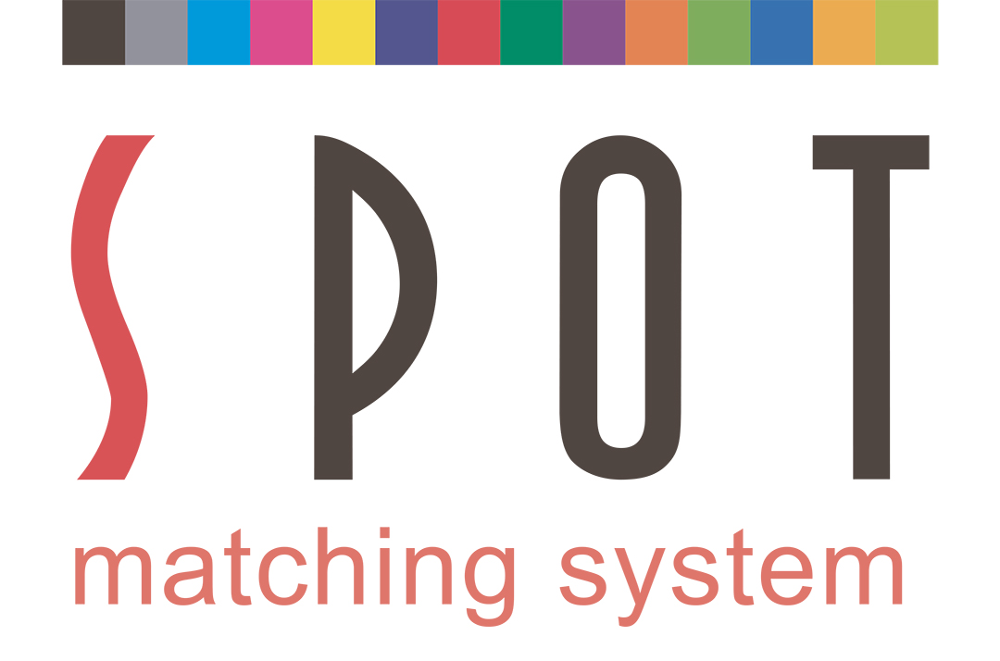
November 2023
The SMS Colour Wheel presented - SMS colours as mixed spot colours, SMS
for teaching purposes
In the light of the fact that the Spot Matching System is not just a colour palette but a colour standard, we decided that it would be proper to release our own Colour Wheel. There have been several colour wheels through the times, all attempting to make sense of how certain colours - Primary colours, can be mixed together to make up new colours.
Art students and Graphic Design students typically play around with Primary inks to create their own colour wheel on paper.
Our colour wheel consists of Cyan, Magenta and Yellow process inks manufactured to ISO 2846-1 - the same inks that are used for CMYK offset printing due to the simple fact that the Spot Matching System is CMYK based by origin.
Since the Spot Matching System is not recipe based but LAB based, there are no "Secondary and Tertiary colours" be definition. The recipe of each colour consisting of more than one process ink depends on the substrate/paper.
It may come as a surprise to even professional offset printers, that there is no law against mixing CMYK inks together to create a spot colour. This fact was in fact what inspired me to start work on the Spot Matching System back in 2000 or so, and something that is included in my patent, issued in 2007. This also means that SMS colours can optionally be ordered from ink manufacturers as spot colours that match the CMYK process composition of any SMS colour, although they are of course typically printed in normal CMYK process printing, which is considerably cheaper than printing a separate SMS spot colour.
From my perspective a SPOT colour is not restricted to colours that are mixed to one ink, - but a colour that a brand chooses to use for it's promotion, regardless of how it is reproduced. Hence the name, the Spot Matching System.
Our CMY colour wheel is here below. It is presented in the Standard version (the original) and hence all the colours below can be reproduced in standard CMYK printing to Fogra 39, Fogra 51, Fogra 47 and Fogra 52 plus GRACoL CRPC3 and CRPC6 plus of course for web and for Television, without noticable colour shift from one media to the next.
Here is the sRGB version. Art Schools and schools for Graphic Design and other Design disciplines, such as Architecture and Product Design that wish to use the Spot Matching System to train their students in use of colours suited for modern design and marketing, please contact support@spotmatchingsystem.com.
We will provide you with the SMS Colour Wheel in the proper format and optionally a copy that can be printed out on a proofing device to view the colours of the SMS colour wheel exactly how they should look. Your students can then mix their own inks and try to match the proof.
The SMS Colour Wheel should be drawn on white, uncoated paper. Offset printers can of course also mix and print the colours of the Wheel using their normal CMYK inks.
Furthermore we offer free student license of our Spot Matching System P20, v4 (869 colours) which is perfect to train students of Graphic Design in modern, icc based colour management, working with colours instead of just photos. Using solid colours is 10 times better, if the goal is for your students to actually SEE how certain colours can be kept correct when they are converted from one media to another.
Ingi Karlsson
CEO
Spot-Nordic

October 2023
SMS Version 5 released - Major upgrade: 2.600+ NEW COLOURS added to the
Spot Matching System
To celebrate our 5 Year Anniversary, coming up on December 1st, we have released version 5 of the Spot Matching System.
The new system, which is delivered in PDF (or jpg) format, contains 1.738 colours pr. palette, v.s. the 869 colours of v4, which still is available.
Available in Standard, ECO and MAX format, the P20, P20e and P20x colour palettes are now available for 90 Euros each.
Registered owners of P20, P20e and P20x are elegible for free upgrades
every 12 months, including a free upgrade to v5.
Please contact support@spotmatchingsystem.com
to claim your upgrade. Please include your customer ID when you order.
Until Christmas, we are offering a special 3 for 2 offer.
Please order P20-ALL and you can have all 3 P20 palettes (P20, P20e and P20x) for 180 Euros.
Further details on our SMS colour palettes and services at www.spotmatchingsystem.com/services.
September 2023
New Product: P31: SMS Standard OFFICE.
We are delighted to announce the first release of our industry standard SMS colours for the office - SMS OFFICE (P31).
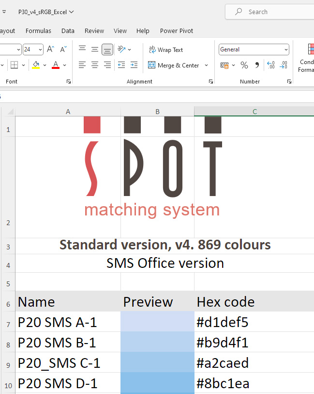
This is the original 869 Standard colours of the Spot Matching System - same colours as P20. Now Brand Owners can select their own SMS colours - or use their existing SMS colours when setting up spreadsheets and presentations to ensure perfect consistency - not only out in the world, but also in the office.
Brand Owners can also use their SMS OFFICE colours (delivered in Excel format) to select and define colours for paint and staff uniforms, to name a few options.
The same rule applies here, as when using the P20 colour palette for professional design: The screen or Projectors need to be calibrated to display the correct colours in sRGB. Calibrators are available from companies such as DataColor and Calibrite/Xrite for 2-400 Euros.
However in the case of SMS OFFICE (P31) a perfect display may not be essential. The main thing here is that the Brand Owner is using the correct corporate colours for all applications within the office.
Included in the price of the SMS OFFICE is a 12 month license to use SMS Standard colours for your company/brand and access to order services and SMS colour variants from Spot-Nordic - see further information at www.spotmatchingsystem.com/services.
September 2023
DO IT YOURSELF - Training for Designers + SMS P20 palettes available in
ASE format (Adobe, Affinity users)
As of September 1st, when you order either P20, P20e or P20x, you will receive the standard PDF format of your colour palette (ask if you need it in other format such as jpg or tif) PLUS you will also get your entire palette in ASE format, enabling you to import all your SMS colours to your Swatches in your workspace in Adobe or Affinity software!
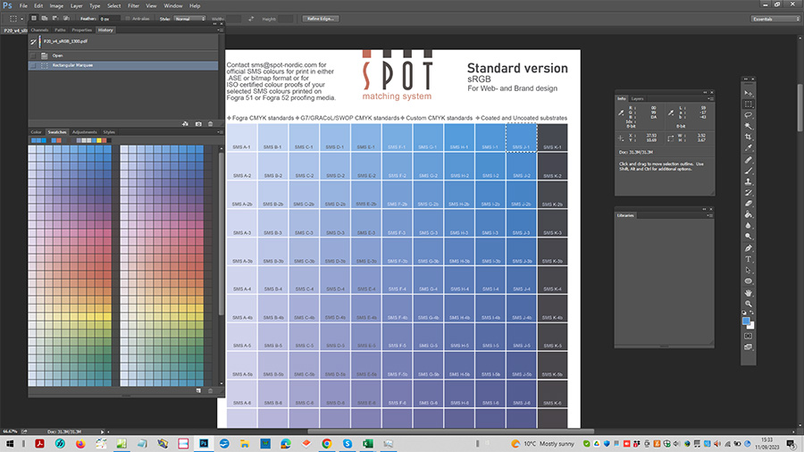
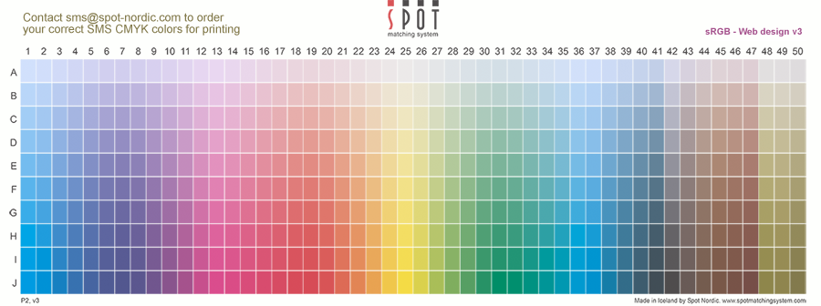
Following up on our announcement that SMS users are now able to convert their SMS colours for their purpose - web, TV, Print or Textile - see news since April here below, we have added quite a lot of slides to the training.
If you are interested in trying out the SMS colours to check just how visually consistent they are when you yourself convert them from one colourspace to the next, before you decide whether you want to buy a P20 colour palette with labelled SMS colours and all colours in ASE format as well, you can download the colour palette here above (this is the Standard sRGB colours, the first 500 colours) and pick out the SMS colours you like for the training.
The updated training slides are here and the supported icc profiles for each SMS colour palette are here.
See further details on the liberation of the SMS colours here below since April.
As always, contact support@spotmatchingsystem.com to order your SMS colour palette or optionally you can purchase them in our webshop - at https://www.spot-nordic.com/shop.
April 2023
DO IT YOURSELF - SMS Users are now able to create their own SMS colour
variations free of charge!
Spot-Nordic is delighted to announce that we have now liberated our SMS colours to increase the number of SMS users in the universe.
As of April 2023 our users can themselves convert their own sRGB SMS colours from our P20, P20e and P20x colour palettes to standard Printing conditions such as Fogra or GRACOL/G7 - free of charge.
Now even small freelance designers with tight budgets can take advantage of our unique SMS colours in their designs to ensure perfect colour consistency cross-media of their customer's brand colours, without having to subscribe the customer to SMS or even without having to buy the Print variations from Spot-Nordic.
The only thing they have to own are the sRGB P20 colour palettes they use in their work, which cost only €60 each.
The P20 palettes (P20, P20e, P20x) each contain 869 colours. They are available in sRGB format (for general design) and REC 0709 or REC 2020 for video/Television design.
For convenience we have set up an overview of the media supported by each SMS colour palette - see here.
When issuing their brand guidelines in this case they need to make sure that it is clear that Spot-Nordic is not the contact to call if there are questions to be answered concerning the SMS colours.
At the same time, of course designers are always welcome to buy CMYK
ready SMS colours from Spot-Nordic - see
here.
Print colours ordered from Spot-Nordic may in some cases contain fewer
process colours - 2-3 instead of 4.
Price pr. CMYK SMS colour is €30 or less if you order SMS BLOCKS of 3 or more SMS colours.
Please watch this presentation to see exactly how to convert your sRGB SMS colours to print-ready CMYK colours.
For bigger customers we continue to recommend subscribing them which includes the Print variations needed for the customer and technical support - for them, their Printers and Manufacturers as needed to ensure successful reproduction of SMS colours.
Please familiarize yourself also with our SMS subscription plans, suited for bigger customers and brands.
March 2023
Standard, ECO and MAX editions v4 available in Fogra 58 RGB format for
digital printing on textile.
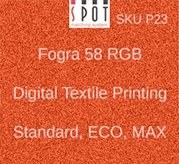
Spot-Nordic is delighted to announce the release of all 3 versions of the Spot Matching System colour palettes in Fogra 58 RGB format for digital printing on textile. The product is delivered in PDF format in high resolution to enable test prints of all SMS colours if needed to ensure maximum accuracy in printing for viewing and measurement at D65/10°, which is the standard in the textile industry.
For more information on the Fogra 58 standard please refer to https://fogra.org/en/research/digital-printing/textilergb-13006.
The SKU number of this product is P23.
The price pr. colour palette (Standard, ECO or MAX), each containing 869 colours is €90.
This format is suited for professional Textile design.
In the case where the textile is to be dyed manually, please communicate the LAB values of your chosen colours to your manufacturer and if necessary order a colour sample (P6) of your colours that you can send to your manufacturer for visual matching in production - see www.spotmatchingsystem.com/services.

Contact support@spotmatchingsystem.com to order or use our webshop to place your order.
January 1st 2023
Standard, ECO and MAX editions v4 available for
design agencies and Printshops in Adobe RGB 1998 format.

Spot-Nordic is delighted to announce that finally all 3 versions of the Spot Matching System colour palettes are available in Adobe RGB 1998 format. The product is delivered in PDF format in high resolution to enable test prints of all SMS colours if needed.
The SKU number of this product is P22.
The price pr. colour palette (Standard, ECO or MAX), each containing 869 colours is €150.
This format is suited for professional Print Design.
Contact support@spotmatchingsystem.com to order or use our webshop to place your order.
October 2022 - The Rutherford Preset & Closed Loop system is SMS READY
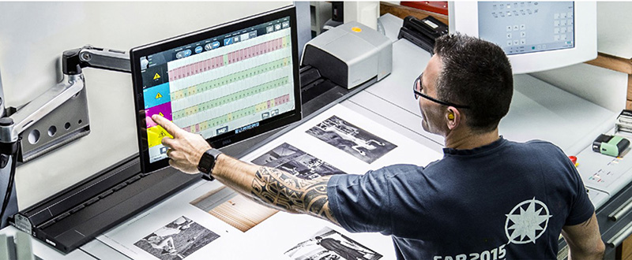

The Rutherford Preset & Closed Loop system for offset presses, from
Rutherford Graphic Products LLC has been awarded the
SMS READY badge in the category of
QC Hardware &
Software. This amazing solution enables printing of all of our SMS
colours (2.607) in Offset Printing according to ISO 12647.
Following this Spot-Nordic (manufacturer and distributor of the Spot Matching System (SMS) has agreed to offer this amazing solution for sale.
Included with each system sold by Spot-Nordic is an SMS READY badge outlining the Printing Standard / Standards available on the Printing Press in question (Fogra or G7 - or both) for 4 consecutive years, worth EUR 2.000.
More information for Offset Printers on the Rutherford system at www.spot-nordic.com/rutherford.
December 2021 - Standard, ECO and MAX editions v4 available for design agencies and Printshops in high resolution Fogra 39 format, ready for printing using the ISO Coated v2 icc profile.
For the first time the entire range of 869 SMS colours are available in their final print format, - for printing according to Fogra 39. Many designers use this CMYK profile (ISO Coated v2 or ISO Coated 300 v2) as a sort of a default CMYK profile when preparing jobs for printing.
To help speed up their work process and to encourage use of SMS colours - to design agencies and designers who prefer to not subscribe their customers to SMS or buy individual print variations of SMS colours, we decided to offer the entire range of Standard, ECO and MAX colours in Fogra 39 format, high resolution, enabling printing of SMS colour patches if requested for proofing or even printing.
In other words, if you buy all 3 print-ready SMS versions you will
have the complete range of SMS colours - over
2.500 colours
in final Fogra 39 print format at your fingertips for only EUR 900 (EUR
300 pr. colour palette).
The measureable area for instrument measurement of each SMS patch in 300 dpi resolution in printing is approx. 1 x 1.5 cm - see picture here below.
See also recommendations as to special SMS colourbars for print layouts/forms - here.
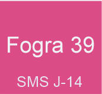
Sample of Fogra 39 SMS colour in it's actual size.
The SKU number of this new product is P25 and it can be ordered either by contacting support@spotmatchingsystem.com or ordered in the Spot-Nordic online shop - here. If you want to order all 3 colour palettes, simply check all 3 and select 3 units when you order.
For brand design we however still recommend using the sRGB (P20) version and then replacing the sRGB colours with print-ready SMS colours only when the artwork has been approved by customer - see www.spotmatchingsystem.com/gettingstarted.
If you own the Fogra 39 colour palette, you obviously do not have to order the Fogra 39 variation of your chosen SMS colours nor a special permission to use it for specification in a brand manual.
If colour consistency cross media is your goal, we recommend the specification be for the SMS numbers of the chosen colours without mentioning of specific standards, such as Fogra 39. You may always order variations for other print standards, such as Fogra 47, Fogra 51, Fogra 52 or GRACoL/G7 should you need it later on for EUR 30 pr. colour - or you may simply choose to subscribe your customer to SMS, which includes all required print variations of the chosen brand colours along with technical support as required - see information about SMS subscriptions at www.spotmatchingsystem.com/services.
If you are not concerned about maximum visual colour consistency cross media (from coated paper to uncoated paper to web and to TV) but you simply want to ensure that your chosen SMS colours be used for printing on coated paper according to Fogra 39, you should mention this in your brand manual/instructions - e.g. "CMYK (according to Fogra 39): SMS xxx, SMS yyy".
December 2021 - SMS Colour of the Year 2022
To support our friends at PANTONE, we have prepared the closest SMS colour to replicate the fabulous PANTONE Very Peri, Colour of the Year 2022.
The SMS Colour of the Year 2022 is available in our Standard and MAX variations, - so is suited for printing on white, coated and uncoated paper in CMYK format, as well as online and for TV. Unfortunately it is not possible to create a suitable variation for printing on off-white substrates (ECO).
The SMS Colour of the Year 2022 is SMS J-CY22. The colours on it's left are, in our tradition it's tints from 10% to 90% and of on it's right we have it's complementary black.

August 2021 - 369 new SMS colours released - included for the standard, ECO and MAX editions v4.

The new v4 of the Spot Matching System contains a total of 869 colours, including 79 shades of black for each colourline of the system.
Following this release we have decided to discontinue the printed SMS
colour guides and most of our printed SMS posters.
This decision is based on the fact that most designers have stopped
using printed colour guides in their work and prefer to take their
chances with their monitor displays and leave the printed version of
their work to God and their printers. Fortunately SMS colours happen to
look the same in their sRGB format on just about any display/monitor as
they should look in standard CMYK printing, so this was an easy
decision.
The only printed items we are keeping are the printed brand colour sample tickets (P6) for quality control and colour matching in production and the P3sq posters, available either for coated or uncoated paper.
|
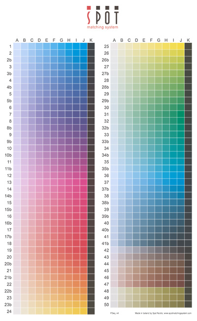 P3sq |
P6c/P6u |
Following this we also took the liberty of updating the SMS logo. The colourful logo is out, except for the SMS READY version and we are going for simplicity using the good old Spot-Nordic logo as a template for the new SMS logo.
The new SMS logo looks like this with the new black with a slight reddish cast to compliment the red colour and to give it a little more punch.
June 2020 - 500 new SMS MAX colours released - for packaging, web and TV - the most vibrant version of SMS until now!

Spot-Nordic has released 500 new colour shades named the SMS MAX series, which are made for process (CMYK) printing on coated, white substrates and thus well suited for packaging applications, indoor and outdoor signage as well as general design for coated / closed substrates, such as coated paper, plastic and digital printing on polyester.
The SMS MAX colours are the most vibrant SMS colours we have
released until now, as you can see here above, which can be an advantage
in packaging for instance.
Supported print standards are for instance Fogra 39, Fogra 51, GRACOL
and SWOP standards, so the SMS MAX colours are in general safe to use
for general magazine advertisements for instance.
Our MAX series are made for omnichannel marketing, - perfectly colour consistent in and between print and digital displays from smart phone displays to cinema displays, like the original SMS series and the ECO series - which are available for free download for web and TV at www.spotmatchingsystem.com/services.
When ordering certified, printed SMS posters, colour guides or make sure to add MAX to the SKU number - for instance P2c MAX is the P2c poster, MAX version printed on coated paper (Fogra 51) - see sRGB version of the P2x poster here above. The MAX products and colours are identified with a small x following their name or product number - see image here above for instance.
May 2020 - 500 new ECO colours announced in a live webinar about the Spot Matching System on INKISH NEWS!

Spot-Nordic has released 500 new colour shades named the SMS ECO series, which are adapted to off-white papertypes.
The ECO series are perfect for those of us that care the most about the environment, since it is perfect for printing on recycled paper for general use, which tends to be quite off-white. The SMS ECO colours are even perfectly reproducible in newspaper printing (coldset) according to ISO 12647-3-2013 / WAN-IFRA standards so as media neutral as our standard colour palette is, it only covers printing on white paper, either neutral white or bright white, while the ECO series cover almost any type of paper from newspaper to bright white and anything in between.
Supported print standards are most Fogra, GRACOL and SWOP standards as well as custom standards like the Munken Pure icc profiles for example.
Our ECO series are made for omnichannel marketing, - perfectly colour consistent in and between print and digital displays from smart phone displays to cinema displays from smart phone displays to cinema displays, like the original SMS series - which are available for free download for web and TV at www.spotmatchingsystem.com/services.
When ordering printed SMS posters or colour guides make sure to add ECO to the SKU number - for instance P2c ECO is the P2c poster, ECO version, printed on coated paper (Fogra 51). The ECO products and colours are identified with a small e following their name or product number - see image here above for instance.
The webinar, organized by INKISH as a part of series called "Learn
With Us" that took place in the week from 25th of May - 29th of May with
companies such as Spot-Nordic, Hunkeler, Ricoh, Canon, Enfocus and more
well known companies in the print and graphics industries can be viewed
here.
January 2020 - User defined SMS colours; not only 500 but thousands of free SMS colours now available to SMS users!
Spot-Nordic is delighted to confirm that it is safe for creative SMS users to create custom SMS gradient combinations containing as many SMS standard colours they like and thus in fact creating their own, unique SMS colour gradients for logos, headlines and packaging, with the new SMS colour combinations still remaining completely colour consistent between coated paper, uncoated paper, web and TV, as well as AR, VR etc. just like individual SMS colours.
Designing with colour gradients is among what is predicted to become more popular in 2020 by brand specialists so the timing is as flawless as our SMS colours.
Additionally it is possible for us to pick out individual custom SMS colours from SMS gradients, if needed.

More information about how to do this here.
December 2019 - 30 new SMS colours presented - the SMS OLIVE range
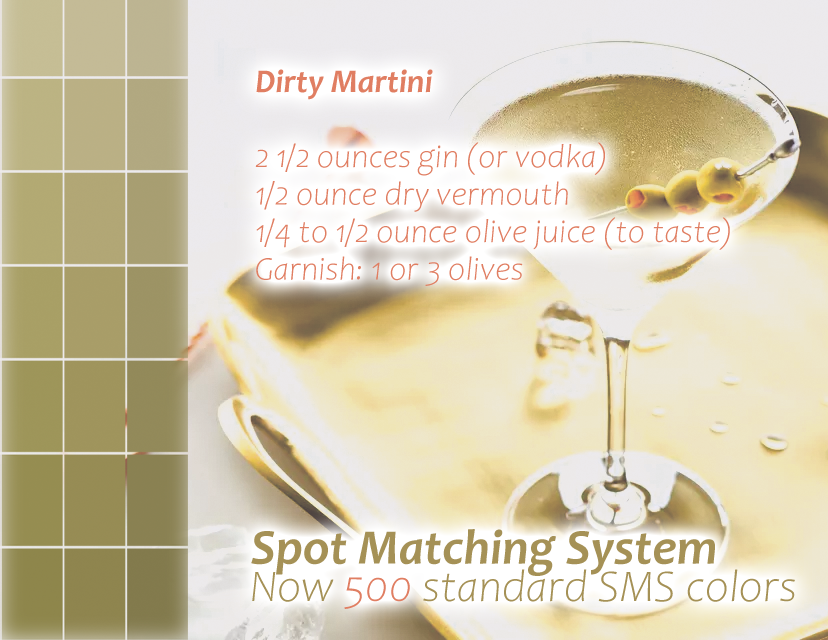
To celebrate the 1 year anniversary of the Spot Matching System, a total of 30 new colours in the OLIVE range have been added to the standard system palette, making the number of standard SMS colours an even 500!
October 2019 - SMS BLOCKS presented

We are happy to announce a simpler way for designers and brand owners to keep track of their colours, - SMS BLOCKS - see further information here.
July 2019 - Spot Matching System presented on ColourSherlock, by Mr. Ganesh Kumar (how, why and when)
July 2019 - SMS CMYK colours available for designers that do not use standard ISO/Fogra icc profiles in their work
We are happy to announce that we now offer SMS CMYK colours ready for designers that do not use the standard ISO or PSO icc profiles, on which the Spot Matching System is based, in their work.
If you, perhaps because your printer insisted on this, happen to use other icc profiles, for instance GraCol icc CMYK profiles, you simply need to send us the CMYK icc profile or ideally the complete settings you are using (CSF file) and we will supply you with any SMS colour you need for your layout in CMYK format.
This means that no CMYK-to-CMYK conversion will be required by your printer to hit the right SMS colours in print - as long as they print according to the print standard on which the icc output profile is based on.
In this case we also assume that the white point of the actual paper that you choose for your job is in line with the white point defined in the icc profile you are using.
Please contact support@spotmatchingsystem.com for more information.
This service is available for both subscribers and non-subscribers - see www.spotmatchingsystem.com/services.
June 2019 - Getting started using SMS colours in graphic design
We have added a new page where we assist graphic designers getting started designing with SMS colours. Check it out!
June 2019 - Interview with Mr. Ingi Karlsson in Design Magazine
(Read
article)
April 3rd 2019 - SMS CMYK colours available for more neutral substrates
Until now we have simply assumed that SMS users would pick "typical, bright, white paper" for their printing jobs.
According to the current ISO 12647-2-2013 standard, typical papers are papertype 1 (bright, white, coated paper) and papertype 5 (bright, white, uncoated paper).
However, it has been pointed out that in some regions of the world, the average white point of the commercially available paper is simply much closer to the old ISO standard, - for papertypes 1,2 for coated paper and papertype 4 for uncoated paper. The white point of these papertypes is more neutral / less bluish than the current, international standard dictates.
So we decided to add SMS CMYK colour variations for these more neutral papertypes, as an option:
P9: SMS CMYK version for printing on coated paper (White point: Fogra 51, print standard Fogra 51): EUR 28 pr. colour.
P9b: SMS CMYK version for printing on coated paper (White point: Fogra 39, print standard Fogra 39): EUR 28 pr. colour*.
P10: SMS CMYK version for printing on coated paper (White point: Fogra 51, print standard Fogra 39): EUR 35 pr. colour*.
P11: SMS CMYK version for printing on uncoated paper (White point: Fogra 52, print standard Fogra 52): EUR 28 pr. colour.
P11b: SMS CMYK version for printing on uncoated paper (White point: Fogra 47, print standard Fogra 47): EUR 28 pr. colour*.
P12: SMS CMYK version for printing on uncoated paper (White point: Fogra 52, print standard Fogra 47): EUR 35 pr. colour*.
It is easy for anyone interested in this to get a spectral instrument that supports the M1 standard (D50/2°) and measure his or her papertypes to check which Fogra standard they actually belong to, - see further instructions at www.spotmatchingsystem.com/technical.
It makes perfect sense for brand owners to select papertypes for all print jobs that have similar white points.
We are happy to advice on which version of your SMS colour will be most appropriate, based on the white point of your papertype, if you provide us with simply the papertype (coated or uncoated) and the measured white point, M1 condition.
April 1st 2019 - Article on SMS in SPINDRIFT
https://spindrift.click/colour-management/new-spot-colour-matching-system
March 30th 2019 - TECHKON SMS READY!
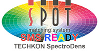
The complete standard palette of 470 SMS colours (SMS v2) is now available from Spot-Nordic for owners of Techkon SpectroDens.

The German manufacturer received the InterTech Award 2018 for this amazing instrument that can handle everything from press measurements (density and spectral) to quality control.
Printers that have SpectroDens (both older and new version) can upload the SMS palette to their instrument from Techkon SpectroConnect, measure SMS colours in their layout during production and compare them to the master LAB value.
Brand owners and print buyers that have a Techkon SpectroDens instrument can measure SMS colours and compare them to the master LAB value of each colour.
The target DE2000 for each of our standard SMS colours is 2 or less.
The measurement condition of SMS is M1, D50/2°.
The same library is valid for both coated and uncoated paper.
The library is delivered free of charge to SMS subscribers, that only need to send us the serial number of their Techkon device. This includes owners of Techkon SpectroDens and Techkon SpectroDrive.
Optionally the library is available in our online store for EUR 99. Buy now.
More information about Techkon instruments is available at www.techkon.com.
March 29th 2019 - labelled SMS colour patches available for brand design.
Our 470 standard SMS colours are now available to brand designers and web/app designers for free.
Go directly to www.spotmatchingsystem.com/services to get your copy, which is delivered in PDF format.
It is optionally possible to grab your SMS brand colours directly from Acrobat.

March 11th 2019 - 50 new SMS colours
We have just added a total of 50 new colours to the standard palette in the brown range.
The new colours, like the old ones, can be correctly reproduced in CMYK printing according to ISO 12647 on coated and uncoated paper, can be correctly displayed on the web, including smart devices (sRGB) and the colours can be correctly displayed on Television (Rec. 709 RGB).
Of course there are other brown colour shades that designers might need and we are here to assist if you need your own custom colour that is not QUITE like the standard SMS colour.

March 6th 2019 - web and TV
We are delighted to confirm that our entire range of 420 SMS colours is not only available for CMYK printing on coated and uncoated paper without visible difference in colour.
Our standard colours are now available for web design/app design (sRGB) and television (Rec. 709).
This makes the Spot Matching System the best choice for so-called omni channel campaigns, where you can select your campaign's theme colours for print, web and TV.
Obviously this makes the Spot Matching System yet more attractive for it's initial purpose - brand design.
The sRGB and Rec. 709 palettes are available for free downloading at www.spotmatchingsystem.com/services.
CMYK variations for printing of the SMS colours are free for SMS subscribers but cost from EUR 28 pr. colour pr. papertype + print standard for non-subscribers.
December 1st 2018 - launch
Launch of the Spot Matching System, the first colour palette in the world offering perfectly consistent printing in CMYK according to ISO 12647, between coated and uncoated paper.
Total number of standard system colours, 420.
Each individual colour of the Spot Matching
System (SMS) is ISO certifiable according to ISO 12647-7-2016.
Shop SMS SMS Technical SMS products & services SMS in articles and webinars
SMS and the environment SMS news Interesting links SMS: How, why and when SMS Q&A
|
SMS for design and
advertising Getting started with SMS colours SMS BLOCKS |
SMS for print Printers (in all categories) SMS test forms |